Rustic furniture · New Wilmington, PA · Since 1985
Come on and sleep in the woods tonight.
Steam-bent hickory, real birch bark and old-time painted finishes. Genesee River has been making rustic beds, chairs, tables and case goods in its own “Genesee Style” since 1985 – for the cabin, the camp, the cottage or your everyday home.

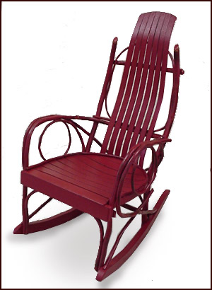
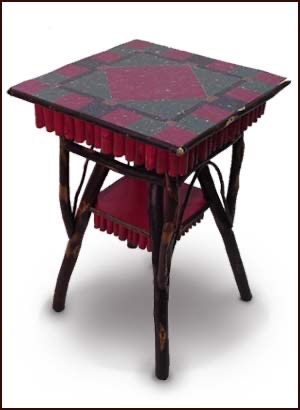
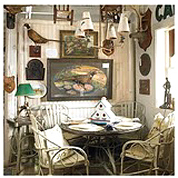
Our roots
It started with bent hickory.
“A chance encounter with an Amish builder of bent hickory furniture set the wheels in motion.”
Since 1985 we have dealt in rustic – both new pieces of our own design and select vintage items. Bent hickory combined with antique finishes became the foundation of what is known today as “Genesee Style”. Many pieces are reproduced from old camp furniture we found in our travels, from the Adirondacks to Ohio and Wisconsin.
Steve & Brenda Trainor
The collection
Step into the world of Genesee River
As beautiful as the Grand Canyon and a lot cheaper to see. Every piece is available in our finishes – pick a category to start.


What makes it Genesee Style
Hickory, bark & a bold coat of paint
Steam-bent & tenoned hickory
Frames of steam bent hickory and tenoned, kiln dried hickory, with mortise and tenon joints and solid oak seats and slats.
Real birch bark work
Birch bark veneer, twig diamonds and split saplings – our bark work started in 1995 with the Rustic Server.
Handpainted & linoleum tops
Tops handpainted here at Genesee River – fishing, hunting, skiing scenes – or patterned inlaid linoleum.
Built to be used
All case goods feature cabinet grade steel ball bearing drawer extensions. Cast acorn, stick or antler pulls.
Color choices
Not just shades of brown
Other manufacturers may only offer their products in various shades of brown. At Genesee River you choose from many colors – all at one price point – so your piece makes a statement instead of fading into the woodwork.
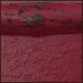
Old Red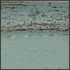
Bishop’s Blue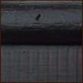
Blackberry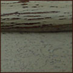
Moss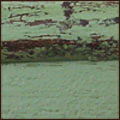
Apple Green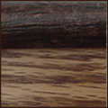
Walnut Stain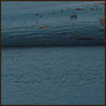
Old Blue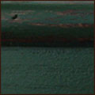
Old Green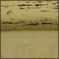
Old Yellow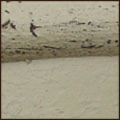
Parchment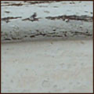
Old White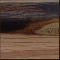
NaturalMix & match: most pieces come in all finishes as well as combinations – a red top on a Walnut Stain base, Moss with Walnut Stain. Blackberry is a hand-combed finish. Custom colors are available on request with an upcharge.
Ask about a finishFrom the line
Reproduced from old camps
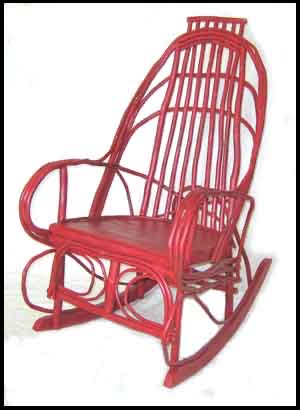


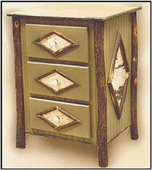
How to order
Pick a piece, pick a color, give us a call
Choose your piece
Browse the furniture – each piece has its GRTC number, so it is easy to ask about.
Choose a finish
One color, a combination, or a custom color on request. Upholstered chairs can use our fabrics and leathers or yours.
Contact us
For pricing or to find a retailer near you, call 724-977-1481 or send the form.
Retailers, designers & architects: ask us about opening a wholesale account – call 724-977-1481 or email geneseeriver@earthlink.net.
Questions
Good to know
Anything else? Call 724-977-1481 – we are happy to help.
Can I buy directly from you?
Call 724-977-1481 or email geneseeriver@earthlink.net for pricing, or ask us for a retailer near you. The form on this page prepares the email for you.
Do you work with retailers, designers and architects?
Yes. If you are a retailer, designer or architect and want to find out more about opening a wholesale account, call 724-977-1481 or email us.
Which finishes can I choose?
Most pieces come in all of our finishes – from Natural and Walnut Stain to Old Red, Bishop’s Blue, Moss and the hand-combed Blackberry – and in combinations of most. Custom colors are available on request with an upcharge.
Can pieces be made in custom sizes?
Some can. The Saranac Game Table has bolt-on legs, so it can be done in custom sizes, and custom sizes are available on the Wawbeek Stepback Cupboard. Contact us for a quote.
Can I use my own fabric on upholstered chairs?
Yes. The Hoop, Tall Pines and Gus chairs and the Gus Ottoman can be upholstered with our fabrics and leathers or with your own material.
Can the furniture go outdoors?
No – our pieces are not recommended for outdoor use. And because every piece is handcrafted, all dimensions are approximate.
Contact